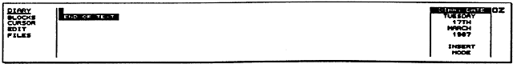
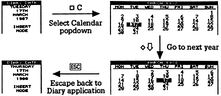

This chapter will show how you can use the Cambridge Z88 Diary application to organise your engagements, and plan your time. It demonstrates how to:
Before using the Diary, make sure you have set the correct time and date on the Clock popdown, as described in Section One.
You can enter the Diary in either of two equivalent ways, whichever you find most convenient:
Either: go into the Index, by pressing the INDEX key, and select the Diary from the APPLICATIONS list by pressing the and keys until the Diary item is highlighted. Then press the ENTER key to enter it.
Or: type D. You can do this from anywhere, even another application.
Once you have made entries in the Diary, it will appear on the list of SUSPENDED ACTIVITIES in the Index, but there can only be one copy of the Diary.
Type CT to go to today's date, and the Diary screen display similar to the diagram shown below will appear:

This gives you a page for today's date, onto which you can type information in any form you like. The information is stored permanently in the diary, and you will be able to refer back to it on another occasion.
Try typing the following appointments onto today's page in the Diary, pressing the TAB and ENTER keys where indicated to lay out the lines neatly:
Work: TAB
10.00 Sales
meeting ENTER
Simon: TAB
12.30 Pick up from station ENTER
You can actually lay out information in the Diary however you like, but it is a good idea to label your appointments, as in the example above, because you will then be able to locate everything in a particular category by searching for the appropriate label. An example of this is given below.
You can move between days in the Diary by typing
to go to the next day
to go to the previous day
Try moving to the day after tomorrow, by typing twice.
Then enter the following appointment:
Work: TAB 11.00 Present report to Board ENTER
The Diary provides a powerful Search command which enables you to find and list out all appointments in a particular category.
As an illustration, the following example provides a list of all appointments relating to Work.
First select the BLOCKS menu, by pressing the MENU key until BLOCKS is highlighted on the menu bar at the left-hand side of the screen. Then move the cursor to highlight Search on the menu, and press ENTER to give the command.
The following prompts will be displayed:
------------ STRING TO SEARCH FOR ---------
EQUATE UPPER AND LOWER CASE ........... Yes
SEARCH ONLY MARKED BLOCK .............. No
PRODUCE LIST .......................... No
PRINT LIST ............................ No
Below the prompt STRING TO SEARCH FOR type
Work:
Then press three times to move the cursor to the line
PRODUCE LIST .......................... No
and type Y to alter the value of the option to Yes.
Now press ENTER, since the other options are not relevant, and the appointments will be listed:
Thursday 17th March 1987
Work: 10.00 Sales meeting
Saturday 19th March 1987
Work: 11.00 Present report to board
Of course, in your case the dates will be different, corresponding to the information you have used.
By calling the Calendar popdown from within the Diary, you can move quickly between different dates, and the Diary will then give the page for the date you have selected.
For example, having forgotten a friend's birthday on the 17th March, you decide to make an entry in the Diary to make sure you do not forget it the following year. Use the following procedure to find the right day very quickly:

You are now on the diary page for the same date one year later, and can type in the reminder.
Refer to the following section for a full list of the Calendar operations.